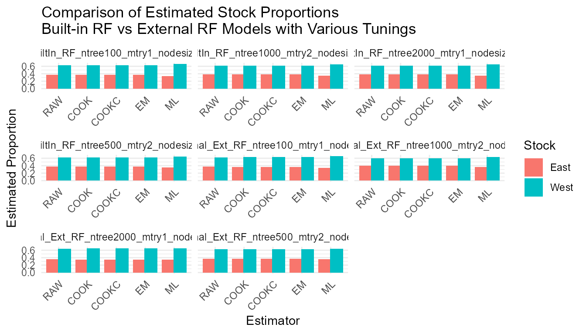

Comprehensive Guide to the RHISEA Package for Mixed-Stock Analysis
Sosthene Akia
Fisheries and Oceans Canadasosthene.akia@dfo-mpo.ca
Alex Hanke
Fisheries and Oceans Canadaalex.hanke@dfo-mpo.ca
2025-10-31
Source:vignettes/RHISEA_comprehensive_Guide.Rmd
RHISEA_comprehensive_Guide.Rmd1) Data Preparation
We start by loading the baseline and mixture datasets and preparing them.
baseline_file <- system.file("extdata", "baseline.rda", package = "RHISEA")
mixture_file <- system.file("extdata", "mixture.rda", package = "RHISEA")
load(baseline_file)
load(mixture_file)
baseline$population <- as.factor(baseline$population)
stocks_names <- levels(baseline$population)
np <- length(stocks_names)
nv <- 2
Nsamps <- 1000
Nmix <- nrow(mixture)
resample_baseline <- FALSE
resampled_baseline_sizes <- c(50, 50)
stock_labels <- c("East", "West")2) Using run_hisea_all() with Built-in Models
Run RHISEA analyses using the built-in Random Forest and LDA models,
specifying phi_method as either “standard” or “cv”.
# Run LDA with standard phi matrix
LDA_results <- run_hisea_all(
type = "ANALYSIS",
np = np,
phi_method = "standard",
nv = nv,
resample_baseline = resample_baseline,
resampled_baseline_sizes = resampled_baseline_sizes,
seed_val = 123,
nsamps = Nsamps,
Nmix = Nmix,
actual = NULL,
baseline_input = baseline,
mix_input = mixture,
method_class = "LDA",
stocks_names = stock_labels,
stock_col = "population",
var_cols_std = c("d13c", "d18o"),
var_cols_mix = c("d13c_ukn", "d18o_ukn")
)
round(LDA_results$mean, 4)
#> RAW COOK COOKC EM ML
#> East 0.3771 0.3376 0.3376 0.3376 0.3217
#> West 0.6229 0.6624 0.6624 0.6624 0.6783
# Run RF with cross-validation phi matrix
RF_results <- run_hisea_all(
type = "ANALYSIS",
np = np,
phi_method = "cv",
nv = nv,
resample_baseline = resample_baseline,
resampled_baseline_sizes = resampled_baseline_sizes,
seed_val = 123,
nsamps = Nsamps,
Nmix = Nmix,
actual = NULL,
baseline_input = baseline,
mix_input = mixture,
method_class = "RF",
stocks_names = stock_labels,
stock_col = "population",
var_cols_std = c("d13c", "d18o"),
var_cols_mix = c("d13c_ukn", "d18o_ukn"),
ntree = 500
)
round(RF_results$mean, 4)
#> RAW COOK COOKC EM ML
#> East 0.3782 0.3794 0.3794 0.3794 0.3516
#> West 0.6218 0.6206 0.6206 0.6206 0.64843) Testing Parameters: phi_method and type
in RF Model
Run analyses comparing phi_method (“standard” vs “cv”)
and types (“ANALYSIS” vs “BOOTSTRAP”) for Random Forest.
phi_methods <- c("standard", "cv")
types <- c("ANALYSIS", "BOOTSTRAP")
results_list <- list()
for (phi_m in phi_methods) {
for (typ in types) {
cat(sprintf("Running RF with type = %s, phi_method = %s\n", typ, phi_m))
args <- list(
type = typ,
np = np,
phi_method = phi_m,
nv = nv,
resample_baseline = resample_baseline,
resampled_baseline_sizes = resampled_baseline_sizes,
seed_val = 123,
nsamps = Nsamps,
Nmix = Nmix,
actual = NULL,
baseline_input = baseline,
mix_input = mixture,
method_class = "RF",
stocks_names = stock_labels,
stock_col = "population",
var_cols_std = c("d13c", "d18o"),
var_cols_mix = c("d13c_ukn", "d18o_ukn"),
ntree = 500
)
res <- do.call(run_hisea_all, args)
key <- paste("RF", typ, phi_m, sep = "_")
results_list[[key]] <- res
cat("Mean stock estimates:\n")
print(round(res$mean_estimates, 4))
cat("\n\n")
}
}
#> Running RF with type = ANALYSIS, phi_method = standard
#> Mean stock estimates:
#> RAW COOK COOKC EM ML
#> East 0.3788 0.3788 0.3788 0.3788 0.3484
#> West 0.6212 0.6212 0.6212 0.6212 0.6516
#>
#>
#> Running RF with type = BOOTSTRAP, phi_method = standard
#> Mean stock estimates:
#> RAW COOK COOKC EM ML
#> East 0.379 0.379 0.379 0.379 0.349
#> West 0.621 0.621 0.621 0.621 0.651
#>
#>
#> Running RF with type = ANALYSIS, phi_method = cv
#> Mean stock estimates:
#> RAW COOK COOKC EM ML
#> East 0.3782 0.3794 0.3794 0.3794 0.3516
#> West 0.6218 0.6206 0.6206 0.6206 0.6484
#>
#>
#> Running RF with type = BOOTSTRAP, phi_method = cv
#> Mean stock estimates:
#> RAW COOK COOKC EM ML
#> East 0.3742 0.3751 0.3751 0.3751 0.3472
#> West 0.6258 0.6249 0.6249 0.6249 0.65284) Using run_hisea_estimates() with External Models and
Comparison
Train external LDA and RF models and provide their outputs with
appropriate phi matrices to run_hisea_estimates() for
estimation, comparing internal and external results.
# Function to perform stratified k-fold CV and compute phi matrix for LDA
get_phi_results_lda_standard <- function(data, formula) {
# Entraînement du modèle LDA sur l'ensemble complet
model <- lda(formula, data = data)
# Prédiction des classes et probabilités sur le même jeu de données
pred <- predict(model, data)
all_predictions <- pred$class
all_probabilities <- pred$posterior
# Matrice de confusion (in-sample)
conf_matrix <- table(Predicted = all_predictions, Actual = data$population)
# Matrice phi normalisée par colonne (probabilité conditionnelle)
phi_matrix <- prop.table(conf_matrix, margin = 2)
list(
confusion_matrix = conf_matrix,
phi_matrix = phi_matrix,
predictions = all_predictions,
probabilities = all_probabilities
)
}
# External LDA phi and estimates
lda_formula <- population ~ d13c + d18o
lda_cv_phi <- get_phi_results_lda_standard(baseline, lda_formula)
lda_model <- lda(lda_formula, data=baseline)
mix_prepared <- data.frame(
d13c = as.numeric(as.character(mixture$d13c_ukn)),
d18o = as.numeric(as.character(mixture$d18o_ukn))
)
lda_pred <- predict(lda_model, mix_prepared)
lda_classes <- as.integer(lda_pred$class)
lda_probs <- lda_pred$posterior
lda_ext_results <- run_hisea_estimates(
pseudo_classes = lda_classes,
likelihoods = lda_probs,
phi_matrix = as.matrix(lda_cv_phi$phi_matrix),
np = np,
type = "ANALYSIS",
stocks_names = stocks_names,
export_csv = FALSE
)
print(round(lda_ext_results$mean_estimates, 4))
#> RAW COOK COOKC EM ML
#> East 0.3771 0.3376 0.3376 0.3376 0.3217
#> West 0.6229 0.6624 0.6624 0.6624 0.6783
# External RF phi and estimates
get_cv_results_rf <- function(data, formula, k = 10, ntree = 500) {
set.seed(123)
folds <- createFolds(data$population, k=k, list=TRUE)
all_predictions <- factor(rep(NA, nrow(data)), levels = levels(data$population))
all_probabilities <- matrix(NA, nrow = nrow(data), ncol=length(levels(data$population)),
dimnames=list(NULL, levels(data$population)))
for(i in seq_along(folds)) {
test_idx <- folds[[i]]
train_data <- data[-test_idx, ]
test_data <- data[test_idx, ]
model <- randomForest(formula, data=train_data, ntree=ntree)
all_predictions[test_idx] <- predict(model, test_data)
all_probabilities[test_idx, ] <- predict(model, test_data, type="prob")
}
conf_matrix <- table(Predicted=all_predictions, Actual=data$population)
phi_matrix <- prop.table(conf_matrix, margin=2)
list(confusion_matrix = conf_matrix, phi_matrix = phi_matrix, predictions = all_predictions, probabilities = all_probabilities)
}
rf_cv_phi <- get_cv_results_rf(baseline, lda_formula, ntree=500)
rf_model_ext <- randomForest(lda_formula, data=baseline, ntree=500)
rf_probs_ext <- predict(rf_model_ext, mix_prepared, type="prob")
rf_classes_ext <- as.integer(predict(rf_model_ext, mix_prepared))
rf_ext_results <- run_hisea_estimates(
pseudo_classes = rf_classes_ext,
likelihoods = rf_probs_ext,
phi_matrix = as.matrix(rf_cv_phi$phi_matrix),
np = np,
type = "ANALYSIS",
stocks_names = stocks_names,
export_csv = FALSE
)
print(round(rf_ext_results$mean_estimates, 4))
#> RAW COOK COOKC EM ML
#> East 0.3782 0.3794 0.3794 0.3794 0.3516
#> West 0.6218 0.6206 0.6206 0.6206 0.64845) Tuning Built-in Random Forest Models with
run_hisea_all()
Evaluate the effect of RF hyperparameters (ntree,
mtry, nodesize) on estimation results.
rf_params_list <- list(
list(ntree=100, mtry=1, nodesize=1),
list(ntree=500, mtry=2, nodesize=1),
list(ntree=1000, mtry=2, nodesize=5),
list(ntree=2000, mtry=1, nodesize=10)
)
results_rf_tuning <- list()
for (i in seq_along(rf_params_list)) {
params <- rf_params_list[[i]]
cat(sprintf("Running RF with ntree=%d, mtry=%d, nodesize=%d\n", params$ntree, params$mtry, params$nodesize))
res <- run_hisea_all(
type="ANALYSIS",
np=np,
phi_method="cv",
nv=nv,
resample_baseline=resample_baseline,
resampled_baseline_sizes=resampled_baseline_sizes,
seed_val=123,
nsamps=Nsamps,
Nmix=Nmix,
actual=NULL,
baseline_input=baseline,
mix_input=mixture,
method_class="RF",
stocks_names=stock_labels,
stock_col="population",
var_cols_std=c("d13c", "d18o"),
var_cols_mix=c("d13c_ukn", "d18o_ukn"),
ntree=params$ntree,
mtry=params$mtry,
nodesize=params$nodesize
)
key <- paste0("RF_ntree", params$ntree, "_mtry", params$mtry, "_nodesize", params$nodesize)
results_rf_tuning[[key]] <- res
cat("Mean estimates:\n")
print(round(res$mean_estimates, 4))
cat("\n\n")
}
#> Running RF with ntree=100, mtry=1, nodesize=1
#> Mean estimates:
#> RAW COOK COOKC EM ML
#> East 0.3727 0.3688 0.3688 0.3688 0.3417
#> West 0.6273 0.6312 0.6312 0.6312 0.6583
#>
#>
#> Running RF with ntree=500, mtry=2, nodesize=1
#> Mean estimates:
#> RAW COOK COOKC EM ML
#> East 0.3782 0.3794 0.3794 0.3794 0.3516
#> West 0.6218 0.6206 0.6206 0.6206 0.6484
#>
#>
#> Running RF with ntree=1000, mtry=2, nodesize=5
#> Mean estimates:
#> RAW COOK COOKC EM ML
#> East 0.378 0.3791 0.3791 0.3791 0.348
#> West 0.622 0.6209 0.6209 0.6209 0.652
#>
#>
#> Running RF with ntree=2000, mtry=1, nodesize=10
#> Mean estimates:
#> RAW COOK COOKC EM ML
#> East 0.3796 0.3808 0.3808 0.3808 0.3487
#> West 0.6204 0.6192 0.6192 0.6192 0.65136) Tuning External Random Forest Models with
run_hisea_estimates() and Comparison
This section evaluates the effect of RF hyperparameters on external RF models, then compares these estimates with the built-in RF tuning results from section 5.
results_rf_external_tuning <- list()
for (i in seq_along(rf_params_list)) {
params <- rf_params_list[[i]]
cat(sprintf("Training external RF with ntree=%d, mtry=%d, nodesize=%d\n",
params$ntree, params$mtry, params$nodesize))
# Train external RF model on baseline
ext_rf_model <- randomForest(
formula = population ~ d13c + d18o,
data = baseline,
ntree = params$ntree,
mtry = params$mtry,
nodesize = params$nodesize
)
# Prepare mixture data as before
mix_data_prepared <- mixture %>%
mutate(
d13c = as.numeric(as.character(d13c_ukn)),
d18o = as.numeric(as.character(d18o_ukn))
)
# Predict posterior class probabilities and pseudo-classes
pred_probs <- predict(ext_rf_model, newdata = mix_data_prepared, type = "prob")
pred_classes <- as.integer(predict(ext_rf_model, newdata = mix_data_prepared))
# Compute phi matrix by cross-validation on baseline with same params
get_cv_results_rf <- function(data, formula, k = 10, ntree = 500, mtry = NULL, nodesize = NULL) {
set.seed(123)
folds <- createFolds(data$population, k = k, list = TRUE)
all_predictions <- factor(rep(NA, nrow(data)), levels = levels(data$population))
all_probabilities <- matrix(NA, nrow = nrow(data), ncol = length(levels(data$population)),
dimnames = list(NULL, levels(data$population)))
for(i in seq_along(folds)) {
test_idx <- folds[[i]]
train_data <- data[-test_idx, ]
test_data <- data[test_idx, ]
model <- randomForest(
formula,
data = train_data,
ntree = ntree,
mtry = ifelse(is.null(mtry), floor(sqrt(ncol(train_data)-1)), mtry),
nodesize = ifelse(is.null(nodesize), 1, nodesize)
)
all_predictions[test_idx] <- predict(model, test_data)
all_probabilities[test_idx, ] <- predict(model, test_data, type = "prob")
}
conf_matrix <- table(Predicted = all_predictions, Actual = data$population)
phi_matrix <- prop.table(conf_matrix, margin = 2)
list(confusion_matrix = conf_matrix, phi_matrix = phi_matrix,
predictions = all_predictions, probabilities = all_probabilities)
}
cv_results <- get_cv_results_rf(baseline, population ~ d13c + d18o, k = 10,
ntree = params$ntree,
mtry = params$mtry,
nodesize = params$nodesize)
# Run HISEA estimates with external RF results
ext_rf_estimates <- run_hisea_estimates(
pseudo_classes = pred_classes,
likelihoods = pred_probs,
phi_matrix = as.matrix(cv_results$phi_matrix),
np = np,
type = "ANALYSIS",
stocks_names = stocks_names,
export_csv = FALSE,
verbose = FALSE
)
key <- paste0("Ext_RF_ntree", params$ntree, "_mtry", params$mtry, "_nodesize", params$nodesize)
results_rf_external_tuning[[key]] <- ext_rf_estimates
cat("External RF Mean estimates:\n")
print(round(ext_rf_estimates$mean_estimates, 4))
cat("\n\n")
}
#> Training external RF with ntree=100, mtry=1, nodesize=1
#> External RF Mean estimates:
#> RAW COOK COOKC EM ML
#> East 0.3718 0.3679 0.3679 0.3679 0.3426
#> West 0.6282 0.6321 0.6321 0.6321 0.6574
#>
#>
#> Training external RF with ntree=500, mtry=2, nodesize=1
#> External RF Mean estimates:
#> RAW COOK COOKC EM ML
#> East 0.3698 0.3711 0.3711 0.3711 0.3581
#> West 0.6302 0.6289 0.6289 0.6289 0.6419
#>
#>
#> Training external RF with ntree=1000, mtry=2, nodesize=5
#> External RF Mean estimates:
#> RAW COOK COOKC EM ML
#> East 0.396 0.4 0.4 0.4 0.3663
#> West 0.604 0.6 0.6 0.6 0.6337
#>
#>
#> Training external RF with ntree=2000, mtry=1, nodesize=10
#> External RF Mean estimates:
#> RAW COOK COOKC EM ML
#> East 0.3604 0.3512 0.3512 0.3512 0.3529
#> West 0.6396 0.6488 0.6488 0.6488 0.6471
# Comparison between built-in RF tuning (section 5) and external RF tuning (section 6)
# Preparing data.frames for comparison
library(reshape2)
compare_df <- bind_rows(
lapply(names(results_rf_tuning), function(name){
res <- results_rf_tuning[[name]]
df <- as.data.frame(res$mean_estimates)
df$Stock <- rownames(df)
df_long <- melt(df, id.vars = "Stock", variable.name = "Estimator", value.name = "Proportion")
df_long$Model <- paste0("BuiltIn_", name)
df_long
}),
lapply(names(results_rf_external_tuning), function(name){
res <- results_rf_external_tuning[[name]]
df <- as.data.frame(res$mean_estimates)
df$Stock <- rownames(df)
df_long <- melt(df, id.vars = "Stock", variable.name = "Estimator", value.name = "Proportion")
df_long$Model <- paste0("External_", name)
df_long
}),
.id = NULL
)
# Plot comparison
ggplot(compare_df, aes(x = Estimator, y = Proportion, fill = Stock)) +
geom_bar(stat="identity", position=position_dodge(width=0.8)) +
facet_wrap(~Model, scales="free_x") +
theme_minimal() +
labs(title = "Comparison of Estimated Stock Proportions\nBuilt-in RF vs External RF Models with Various Tunings",
x = "Estimator", y = "Estimated Proportion") +
theme(axis.text.x = element_text(angle=45, hjust=1))
This structured vignette provides a full, stepwise walkthrough of RHISEA usage from fundamental data steps, through modelling and estimation, to tuning and comparison of internal vs external methods, supporting robust mixed-stock fishery assessments.